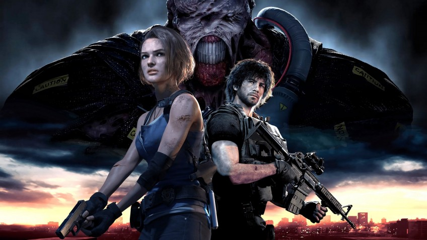
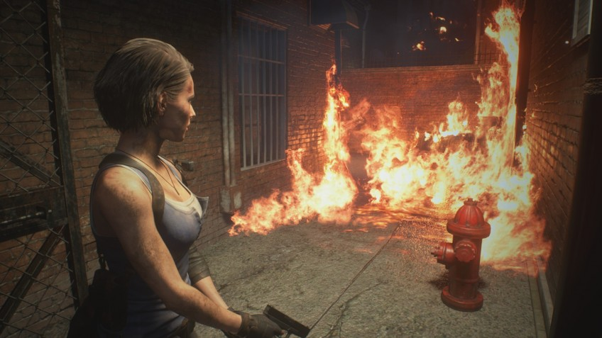

Статья
Обзор Resident Evil 3 Remake. Совсем другая игра
Прошлогодний ремейк Resident Evil 2 был прекрасен – и как современный хоррор, и как возвращение любимой классики. Он даже завоевал у нас титул игры года! Поэтому мы с оптимизмом ждали продолжение — перезапуск третьей части. Хотя, конечно, догадывались, что таких ярких впечатлений, как год назад, уже не получим. Но вот чего мы точно не ждали, так это того, что Resident Evil 3 Remake будет сильно отличаться не только от предшественницы, но и от собственного первоисточника.
Последний побег
Вышедшая в 1999 году Resident Evil 3 продолжала историю Джилл Валентайн, героини первой части. Её напарник Крис уехал за границу и попал в Resident Evil Code: Veronica, а Джилл осталась в Раккун-сити… и каким-то чудом проспала начало зомби-апокалипсиса.
На протяжении всей игры она пытается выбраться из города, но это не так-то просто: улицы перекрыты баррикадами, горожане превратились в живых мертвецов, а за Джилл гоняется бессмертный преследователь в чёрном плаще.
Героиня прекрасно знает, что в катастрофе виновата корпорация «Амбрелла», где секретно разрабатывали биологическое оружие. Но её единственные союзники в этом кошмаре — это наёмники самой «Амбреллы». Их послали в Раккун-сити, чтобы спасти последних выживших. Ну… по официальной версии.
На деле же военных просто отправили в город на убой: таким образом компания хотела собрать побольше данных о боеспособности монстров, порождённых вирусом.
Одновременно «Амбрелла» забросила в город ещё и Немезиса — особенно живучего мутанта, который способен пользоваться оружием и подчиняться командам. Приказ у него прост: убить всех, кто сумел сбежать из особняка в первой части. И Джилл, конечно же, числится в этом списке.

Ремейк довольно точно повторяет эту фабулу, хоть и меняет буквально каждую деталь. Как и в случае с Resident Evil 2, у всего происходящего появилась чёткая логика. И хотя после прохождения всё равно остаются вопросы к сценарию, он стал в разы качественнее, чем был в оригинале.
Больше всего от нововведений выиграли наёмники. Раньше они казались довольно безликими, а вот в ремейке стали куда более живыми: матёрый вояка Михаил, циник Николай и добряк Карлос. Он не раз спасает жизнь главной героине и становится вторым играбельным персонажем. Но несмотря на то, что диалогов в ремейке стало гораздо больше, никакой особой химии между Джилл и Карлосом всё равно нет. Большую часть времени они просто обсуждают насущные проблемы.
А вот на задушевные беседы сил уже не остаётся.
До неузнаваемости
Ремейк Resident Evil 2 крайне щепетильно относился к первоисточнику. Разработчики улучшили все старые локации и катсцены, но сохранили их узнаваемость. А вот ремейк третьей части просто меняет большую часть старого контента на новый. И если переработка сценария пошла ему только на пользу, то обо всём, что просто выкинули, трудно не сожалеть. Ладно ещё улицы города поменялись до неузнаваемости, но как же часовая башня? Фабрика? Парк? Их просто нет.

Из-за того, что разработчики ремейка сократили его на несколько крупных локаций, проходится он очень быстро — меньше, чем за пять часов. Он короче, чем любой из двух сценариев прошлогодней Resident Evil 2. И оставляет после себя недоумение: «и это всё?». Одиночного контента действительно больше нет: режима «Наёмники» в ремейк не завезли.
Проходить Resident Evil 3 Remake просто и приятно. Игра делает всё для вашего удобства, не напрягает поиском множества ключей, не требует экономить патроны, постоянно подкидывает новых врагов и зрелищные сцены. Она не успевает надоесть. Но при этом она вряд ли запомнится, как старая RE3 или новая RE2. Отбросив свои хоррорные корни, она стала просто ААА-блокбастером. Ещё одним.